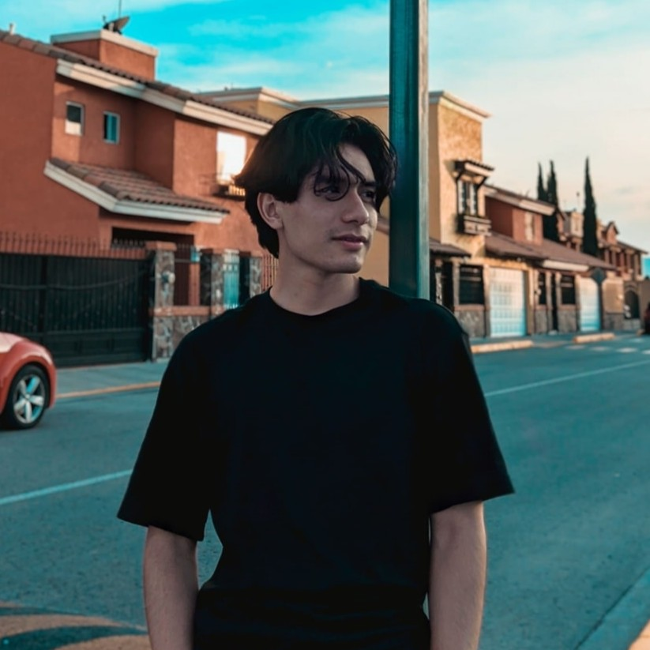

Specializing in Embedded Electronics, Machine Learning, Biomedical Signal Processing, and Real-Time Systems[cite: 6]. Passionate about human-machine interaction and assistive robotics[cite: 7].
Contact Me Download CV
Developed a deep learning classifier (ResNet18) achieving 94.44% accuracy to distinguish between classes, significantly outperforming scratch models.
Optimized PID parameters for a non-linear inverted pendulum using Particle Swarm Optimization, reducing stabilization time by 62.5%.
Python application implementing Ant Colony Optimization to find optimal paths between Metro stations, featuring a custom GUI.
Prototype of Multimodal Haptic Feedback applied to a Robotic Gripper with real-time bio-signal processing.
Ongoing portfolio building covering OOP, Automation, Web Dev, and Data Science. Currently developing 100 projects.
Currently working on new Bionics and AI applications. Stay tuned for updates!
GPA: 3.63/4.00 [cite: 21]
Open to opportunities in Bionic Engineering and Embedded Systems.